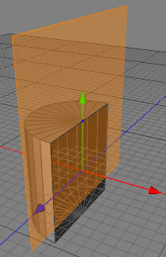
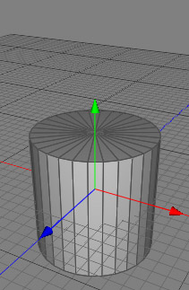
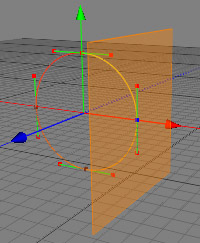
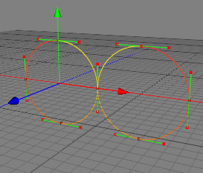

Mirror Tool
Many objects in nature and the technical world are symmetrical. To simplify the process of modelling it is not always necessary to model two identical sides of a object twice. For this purpose you can use the mirror tool which mirrors polygons or splines at a interactively defines mirror plane.
 
Completing a half cylinder with the mirror tool.
 
Mirroring a spline. Only paths which have a selected control point are mirrored.
Tip: You can also use the symmetry creator object to create symmetric objects.
Modes
This tool only works on raw polygon or raw spline objects. In all modes.


The mirror tool can mirror any type of data (points, edges or polygons) which can be in spline or polygon objects. To perform the actual mirror operation select the data you want to mirror. Now choose the mirror tool from the menu "Tools Mirror". The properties of the mirror tool will now appear in the tool properties view. Set the properties of the tool (for an explanation of each property see the properties description below) and perform either an interactive mirror operation or a manual mirror operation.
Mirror". The properties of the mirror tool will now appear in the tool properties view. Set the properties of the tool (for an explanation of each property see the properties description below) and perform either an interactive mirror operation or a manual mirror operation.
In the case of the interactive mirror operation click into the 3D view and drag the mouse while still holding the button pressed too the point where you want to mirror. The mirror plan will snap to that point and the mirroring point will be highlighted blue. Once you've positioned the mirror plane perform the mirror operation by releasing the mouse button.
The purpose of the manual mirror operation is to mirror at a plane which doesn't go through a point of the object. If you perform an manual mirror operation just press the perform "OK" button in the tool properties view after setting the tool properties.
Keys
- none
Properties
- Coordinate system: Coordinate system after which the mirror plane will be aligned.
- Object: The mirror plane is perpendicular too the axes of the local object coordinate system.
- World: The mirror plane is perpendicular too the axes of the world coordinate system.
- Mirror plane: The axis to which the mirror plane is perpendicular. Doesn't have any effect if you are in screen mode.
- Duplicate elements: Duplicates the mirrored geometry if turned on. Otherwise the selected geometry will just be mirrored.
- Value: Sets the value of the manual mirror operation. The value defines the direction into the mirror plane direction which should be mirrored.
- Apply: Performs a manual mirror operation.